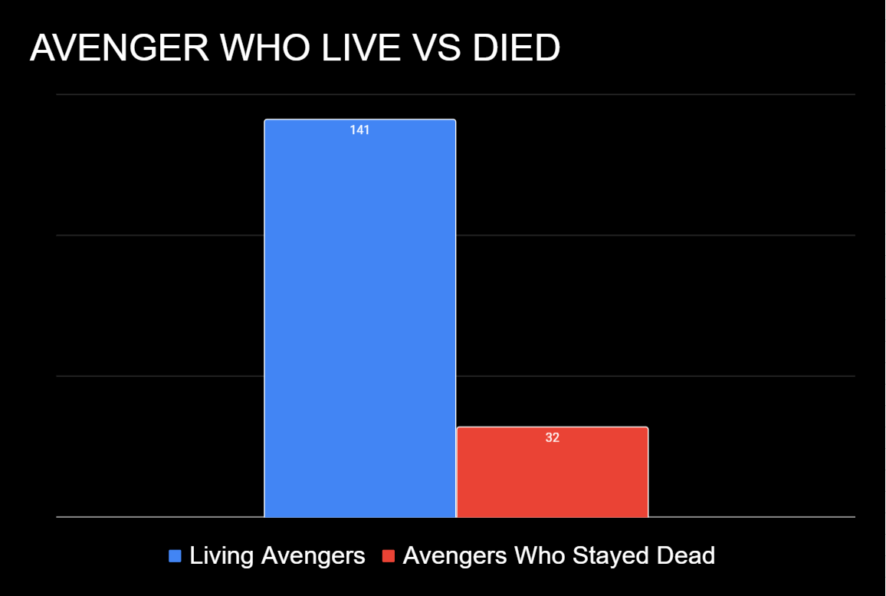
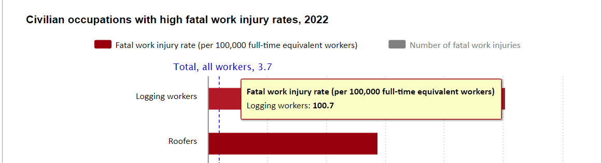

Data Analysis Final
Module Learning Google DocHow deadly is being an Avenger?
Using a data set from FiveThirtyEight it lists each Avenger and whether or not they died, and if they have returned from death. The CVS file used for this information can be found on my Github or as a Google Sheet including some calculations. This data specifically looks at the comic book Avengers, and not the movies, which differ. Some of the source reference I checked and seemed broken, or obsolete, but I have decided to continue with this data set, assuming that the original author did their due diligence. (I did double check some info that had broken links or references, and it seemed to check out, but I did not chekc every single one). Finding out how deadly being an Avenger is, is harder than it first seems. I could simply check the data set and see which Avenger's have died. However, due to the nature of being a superhero, death can often be a momentary setback. So I have to ensure that any character who died stayed dead. To do this I added together every data point in the Returned Section that stated NO. This give me the sum of all people who died and didn't return. This ensured there is no double counting or false positive. Someone who died and didn't return cannot die again, and someone who never died doesn't need to be listed as "not returning". Doing this I get a graph like so:
So in total 141 Avengers lived in the end, and 32 stayed dead. So 32 out of 173 died, for 18.5% mortality rate. This is neat but without context is meaningless, so that moves us to another important question.
Is being an Avenger the deadliest job?
To make this comparison I searched the web and found statistics given by U.S. Bureau of Labor Statistics on occupations with high mortality rates. The site used is the bls.gov Here . Comparring the Avengers to the most dangerous job listed here:
(The image for this is included in my Github as "Labour.png" Logging was the highest morality with 100.7 per 100,000 workers, or .1%. This means that being an Avenger is 185 times more dangerous than being a logger. Even if we compare to a very dangerous occupation like being the president, where 8 of 45 presidents died in office. That comes out to 17.8%, meaning that being the president is safer than being an Avenger.